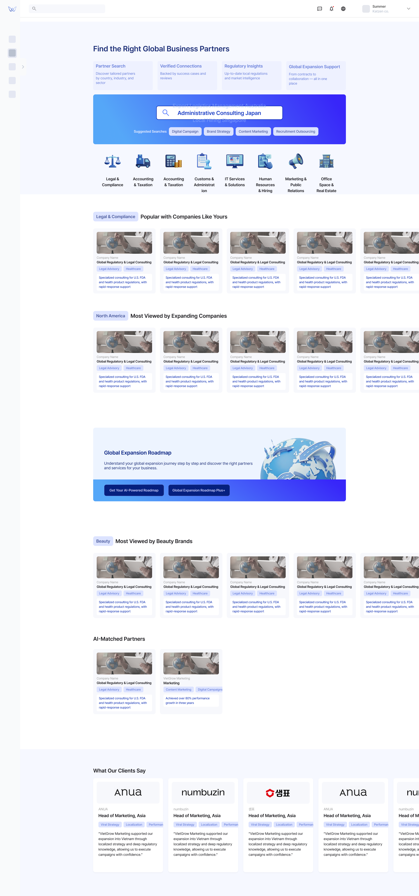

Weave
Companies fail overseas because they can't find or work with the right local partners.
Weave connects the entire workflow — from finding trusted partners to collaborating across borders with AI.

Let's start with the context
Expanding overseas sounds like growth.
In reality, it's where well-resourced companies fail.
Even the biggest companies struggle when they enter unfamiliar markets without understanding local culture, regulations, or the right partners.
Airbnb · 2016–2022
Shut down its entire China business after 6 years — lost to local competitors who understood the market.
Uber · 2013–2018
Sold its Southeast Asia operations to Grab after failing in 8 countries — local knowledge outweighed global scale.
Walmart · 1997–2006
Lost over $1B in Germany after refusing to adapt to local culture — ignored local advisors entirely.
The most common reasons companies fail to expand overseas
What we heard from users
"We spent three months just trying to find a marketing agency in Vietnam. Everyone we talked to was someone's friend of a friend. There was no way to actually compare options."
Marketing Director · Mid-size cosmetics brand
"Our partner in Thailand was handling our entire brand launch, but we had no visibility into what they were doing. By the time we realized the messaging was wrong for the local market, it was already live."
Head of Global Expansion · DTC skincare startup
"Every document we send to our local partner goes through email, gets translated on their end, and comes back with changes we can't track. We're basically working blind."
Operations Manager · Consumer electronics company
of business leaders struggle to identify and enter new markets.
of companies rank local regulations as their biggest barrier to expansion.
of companies struggle with language and cultural barriers overseas.
These failures share one root cause:
lack of reliable local partners.
And finding those partners? Still a broken process. No structured marketplace exists.
Word-of-mouth
Relies on personal networks. Limited options, no way to compare.
Government programs
Scattered across 15+ agencies. Hard to find, harder to navigate.
Expensive consultants
Reliable but priced for enterprises. Out of reach for most companies.
Companies expanding overseas have no clear guidelines, no reliable information, and no structured way to find, evaluate, or work with local partners.
How might we create a trustworthy space where companies can confidently find reliable partners and manage expansion from start to finish?
Design Goals
Create a space where expanding companies can trust the information and feel confident in every decision.
Design goal · 01
Enable data-driven partner matching
- Surface relevant partners based on company profile and target market
- Provide verifiable performance data so companies can compare with confidence
Design goal · 02
Provide a seamless AI-driven workspace for HQ-partner collaboration
- Give both sides one trusted space for every decision and communication
- Use AI to assist document review, translation, and quality control across borders
A platform with reliable, data-driven partner matching and an all-in-one AI-powered workspace — from discovery to daily collaboration.
Here's how I arrived at this solution
Enabling data-driven partner decisions
How to help companies find the right local partners through evidence, not introductions
Design solutions for the Marketplace


The full Marketplace page

Designing a reliable shared workspace
One trusted space for every decision and communication between HQ and local partners
Design solutions for Workspace Dashboard

AI-powered document workflow
How AI assists cross-border document collaboration — from auto-completing content to localizing expressions to translating for the partner's market
Once the user extracts key sections and selects a partner to send to, AI takes over with three steps before delivery.
The Full Flow
From discovery to daily collaboration — one connected platform
Browse the marketplace, evaluate a partner, move to engagement, and collaborate in a shared workspace — without leaving Weave.
01 Onboarding
Set up your company profile and expansion context
New users register their company, define target markets, and set industry preferences — creating the foundation for AI-driven recommendations across the platform.
02 Marketplace
Discover and compare trusted local partners
AI-driven recommendations surface relevant partners based on company profile. Browse by category, view social proof, and evaluate partner profiles with data-driven trust signals.
03 Roadmap
Generate a tailored market entry plan
AI analyzes your company profile, industry, and target market to generate a step-by-step expansion roadmap — connecting market analysis directly to partner discovery.
04 Contracting
Move from evaluation to engagement in one place
Generate proposals, request quotes, and draft contracts within the same workflow — reducing handoffs and accelerating deal closure.
05 Workspace — AI Review
AI-powered regulatory and compliance review
AI scans documents for regulatory risks, flags non-compliant expressions, and provides recommended corrections — with links to related departments, projects, and legal consultation.
06 Data Management — Document Workflow
Upload, extract, and share documents with partners
Upload documents, extract key sections, select which partner to share with, and set sharing conditions — all within a structured document management flow.
07 Workspace — AI Document Workflow
Auto-complete, localize, and translate before delivery
AI fills in missing content, flags culturally inappropriate expressions with local alternatives, and translates the full document into the partner's language — ready to deliver.
User Testing
Testing with real users
3
Participants
2
Task Flows Tested
Remote
Google Meet + Figma
Workspace
Dashboard + AI Document Workflow
Finding 01 — Information Overload
All three participants struggled with text density and unclear visual hierarchy.
"I couldn't tell where to look first. Everything had the same visual weight — I had to read every line to figure out what was different."
Participant A · Eunji
"There's too much information at once. The unfamiliar terms made it even harder to process."
Participant B · Sihyun
"The amount of text made it hard to stay focused. It all blends together."
Participant C · Boram
Insight
Users don't need less information — they need clearer visual hierarchy and progressive disclosure. The priority isn't reducing content, but structuring it so users can scan, identify what matters, and dive deeper only when needed.
Finding 02 — AI Button Usability
AI buttons at the bottom of the editor forced constant scrolling and hid the workflow sequence.
"I keep scrolling down to press a button, then back up to see the result, then down again for the next step. It's exhausting."
Participant B · Sihyun
"The editing process feels like it has a sequence, but I couldn't tell which button to press first just by looking at them."
Participant A · Eunji
"If no one explained it to me, I wouldn't have known what these buttons do. You'd have to just try them to find out."
Participant C · Boram
Insight
The AI tools need to be visible without scrolling and communicate their sequence. Users should understand the workflow order (Auto-Complete → Localization → Translation) at a glance, not through trial and error.
Before
AI buttons at bottom of editor — requires scrolling
After
AI buttons repositioned — sticky, sequential, always visible
Reflection
What I learned from this project
AI should remove friction, not add features
The strongest AI features in Weave — auto-complete, localization review, translation — all solve the same type of problem: tasks that are tedious and error-prone because of volume and language barriers, not because they're conceptually hard. Every time we considered adding an AI feature, we asked: "Is this removing a real pain point, or just adding novelty?" That filter kept the product grounded.
Show the sequence, not just the tools
User testing revealed that having the right AI tools isn't enough — users need to understand the order. When buttons were presented without clear sequencing, participants didn't know what to press first. This taught me that workflow design is as much about communicating the path as it is about building the features along it.
Design for the user who doesn't know what they need
First-time expanders don't know what type of partner to search for, what regulations apply, or how to structure a cross-border proposal. The discovery experience had to guide without assuming expertise — which led us to AI-recommended partners over pure search, and structured document workflows over blank editors.
Cultural intelligence can't be an afterthought
The localization review feature exists because we learned that direct translation isn't enough. "Clean Girl" doesn't mean the same thing in Korea. "Board-certified dermatologist" doesn't carry the same weight. Designing for cross-border collaboration means building cultural awareness into the product itself — not just translating the UI.
What I'd explore next
Test with real expansion data — validate partner matching accuracy and trust signal effectiveness with actual companies going through overseas expansion.
Expand localization review — train the AI on more market-specific cultural patterns beyond US-Korea, and measure how localization corrections reduce partner revision cycles.
Measure the AI workflow impact — compare document review time, error rates, and partner satisfaction between the AI-assisted workflow and traditional email-based processes.